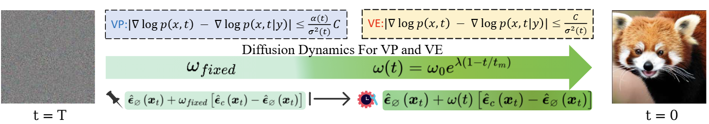

Biography
Publications
(C: Conference | J: Journal | P: Preprint | *: Equal Contribution)
Conference

[C1] C²FG: Control Classifier-Free Guidance via Score Discrepancy Analysis
IEEE/CVF Conference on Computer Vision and Pattern Recognition (CVPR) 2026 Highlight

[C2] Bidirectional Noise Injection: Enhancing Diffusion Models via Coordinated Input-Output Perturbation
AAAI Conference on Artificial Intelligence (AAAI) 2026 Oral
[C4] Pruning for Sparse Diffusion Models based on Gradient Flow
2025 IEEE International Symposium on Information Theory (ISIT)
[C4] Convexity of Mutual Information Along the Fokker-Planck Flow
2025 IEEE International Symposium on Information Theory (ISIT)
[C5] Where We Have Arrived in Proving the Emergence of Sparse Interaction Primitives in DNNs
The Twelfth International Conference on Learning Representations (ICLR) 2024
Journal
Preprint
[P1] A Revisit to Rate-distortion Theory via Optimal Weak Transport
arXiv 2026
[P2] Rate-distortion Theory with Lower Semi-continuous Distortion on Noncompact Alphabets
arXiv 2026
Research Experiences
Honors & Awards
Academic Services
Top